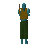

Iron axe
| Config name | iron_axe |
| Item id | 1349 |
| Value | 56 gp |
| Weight | 3lb |
| Members | No |
| Tradeable | Yes |
| Stackable | No |
| Equip slot | righthand |
| Options | Wield |
| Category | weapon_axe |
| Level required | 0 |
| Defined in | scripts/skill_woodcutting/configs/axes/axes.obj |
| Equipment stats | Stab att -2, Slash att 5, Crush att 3, Slash def 1, Strength 7 |
Iron axe
A woodcutters axe.
Show 1 ground spawn on the world map → Open in knowledge graph →
How to make
| Skill | Level | XP | Ingredients | Tool | How | Where | Makes |
|---|---|---|---|---|---|---|---|
| Smithing | 16 | 25.0 | interface | anvil | 1 |
Dropped by
| NPC | Level | Quantity | Rarity | Via | Notes |
|---|---|---|---|---|---|
| 29 | 1 | 3/64 (4.69%) | |||
| 22 | 1 | 1/64 (1.56%) | |||
| 45 | 1 | 1/64 (1.56%) | |||
| 13 | 1 | 1/128 (0.78%) | |||
| 18 | 1 | 1/128 (0.78%) | |||
 Zombie | 25 | 1 | 1/128 (0.78%) |
Sold at
| Shop | Shopkeeper | Stock |
|---|---|---|
| Aemad's Adventuring Supplies. | 2 | |
| Armoury | 5 | |
| Gulluck and Sons | 5 | |
| Jiminua's Jungle Store. | 5 | |
| Bob's Brilliant Axes. | 5 | |
| Obli's General Store. | 5 |
Ground spawns
| Area | Coordinates | Level | Count | Map |
|---|---|---|---|---|
| Palace (underground) | 3162, 9888 | 0 | 1 | view |
Quests
Referenced in scripts
scripts/_test/scripts/cheats/cheat_bank.rs2scripts/drop tables/scripts/barbarian.rs2scripts/drop tables/scripts/skeleton.rs2scripts/drop tables/scripts/zombie.rs2scripts/levelrequire/scripts/tier1.rs2scripts/levelup/scripts/levelup_unlocks_smithing.rs2scripts/macro events/scripts/woodcutting/macro_event_ent.rs2scripts/quests/quest_zanaris/scripts/quest_zanaris.rs2scripts/skill_woodcutting/scripts/old_woodcut.rs2scripts/skill_woodcutting/scripts/woodcut.rs2